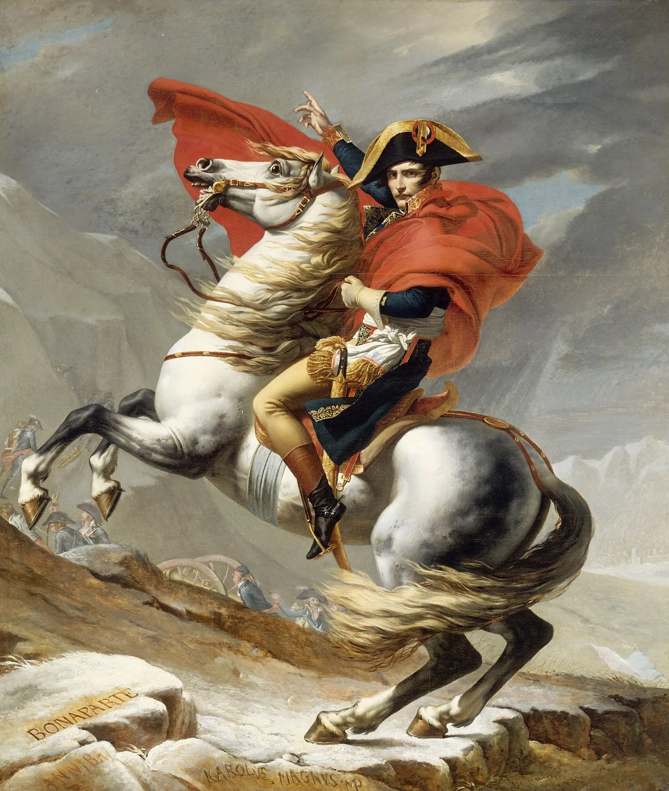
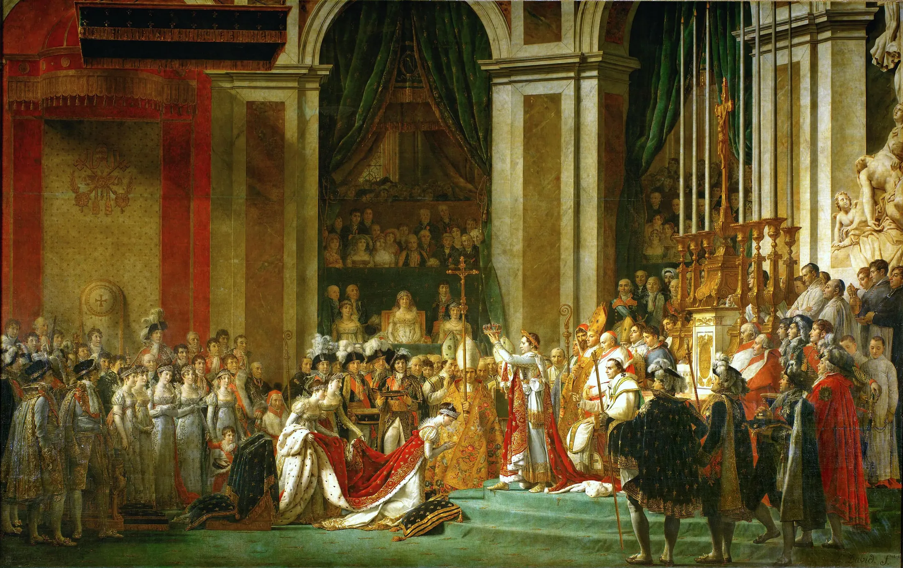
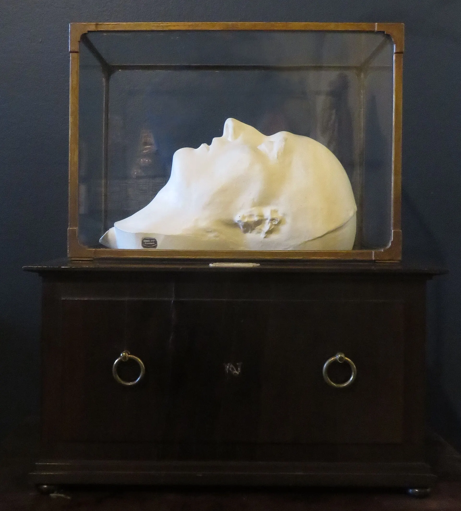
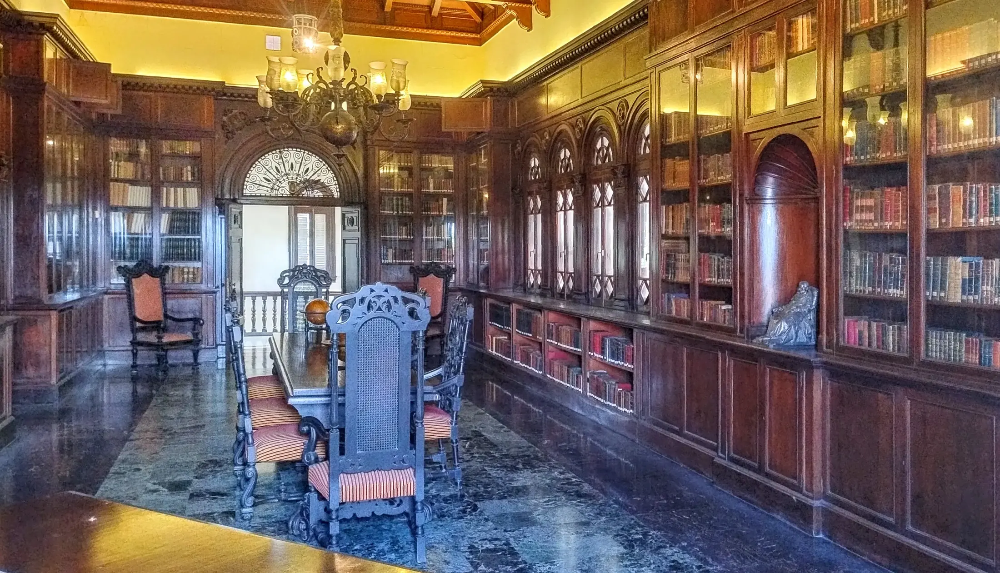
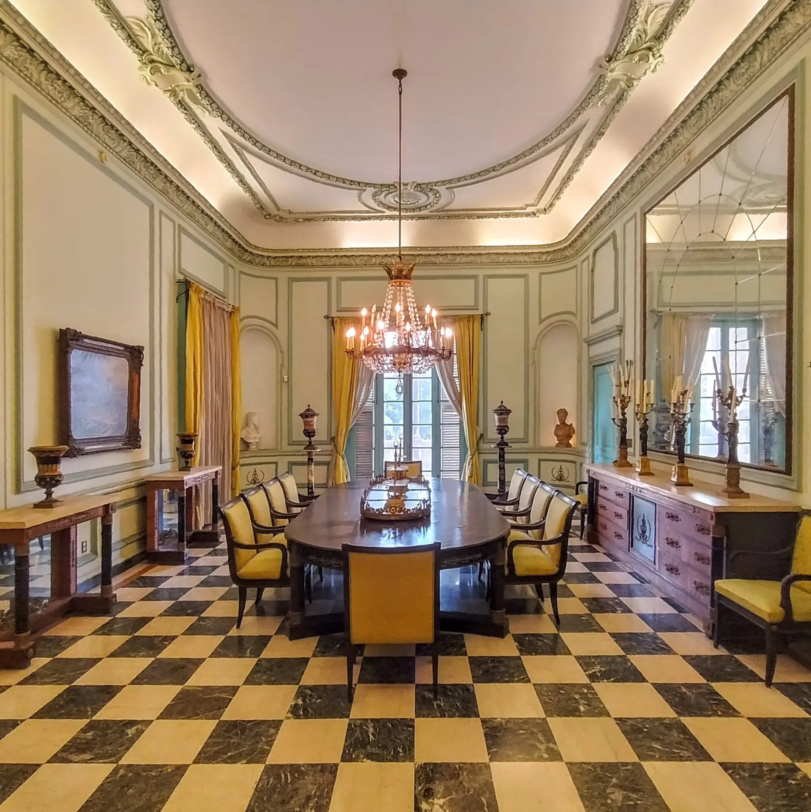

Santa Elena · 5 de mayo de 1821
El último rostro
Cuarenta horas después de la muerte del emperador, sus médicos tomaron un molde de yeso de su rostro. De aquel negativo nacieron las máscaras que hoy custodian unos pocos museos del mundo.

Arte y objetos del Primer Imperio en el palacete de la calle San Miguel.
ScrollLa exposición
Veinticinco años bastaron para cambiar Europa. Desde un puente en Italia hasta una isla en el Atlántico Sur, El Águila y la Isla reúne lienzos, mármoles, bronces y porcelanas que fabricaron la imagen de un emperador y que, por caminos insospechados, terminaron cruzando el océano hasta La Habana.
Recorrido

Obra invitada · Sala II
Jacques-Louis David, 1805–1807. Recorra el lienzo detalle a detalle.
Napoleón alza la corona que él mismo se ha puesto unos minutos antes. David descartó el boceto en el que se coronaba a sí mismo.
Arrodillada sobre un cojín de terciopelo, la emperatriz recibe la corona. El pintor la rejuveneció a petición del propio Napoleón.
El Papa bendice la escena con un gesto. Viajó desde Roma para la ceremonia y apenas tuvo un papel en ella.
Letizia Bonaparte preside desde la tribuna central. En realidad no asistió: estaba en Roma, enfadada con su hijo.
Artes decorativas
Bronce dorado, porcelana de Sèvres, caoba y terciopelo. Los objetos que vistieron la vida cotidiana del Imperio, de las Tullerías a los salones habaneros.

Santa Elena · 5 de mayo de 1821
Cuarenta horas después de la muerte del emperador, sus médicos tomaron un molde de yeso de su rostro. De aquel negativo nacieron las máscaras que hoy custodian unos pocos museos del mundo.
Francesco Antommarchi, el último médico de Napoleón, conservó una copia del molde. Años más tarde se instalaría en Cuba, donde murió en 1838.
Las copias vaciadas a partir de aquel molde viajaron con coleccionistas y viajeros. Uno de ellos descansa hoy entre los muros de este palacete del Vedado.
Sin uniforme ni corona, la máscara muestra al hombre y no al mito. Es, quizá, el retrato más honesto de toda la exposición.
Catálogo

Dónde
Calle San Miguel 1159,
esquina a Ronda.
Vedado, La Habana.
Palacete de estilo renacentista florentino, frente a la escalinata de la Universidad.
Horario
Visitas guiadas
Recorridos por la exposición cada sábado a las 11:00, en español e inglés. Grupos escolares con reserva previa.
Reservar visita